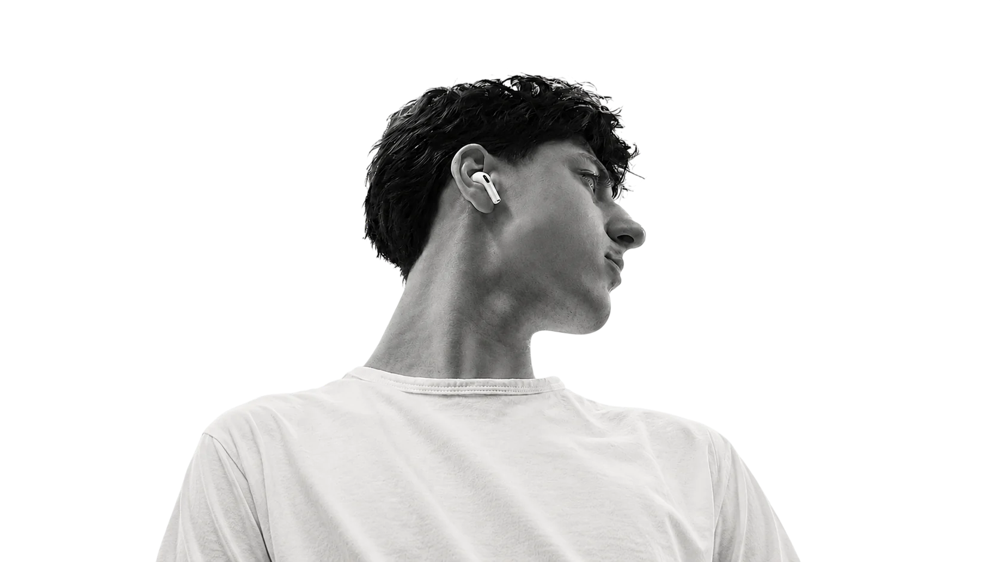
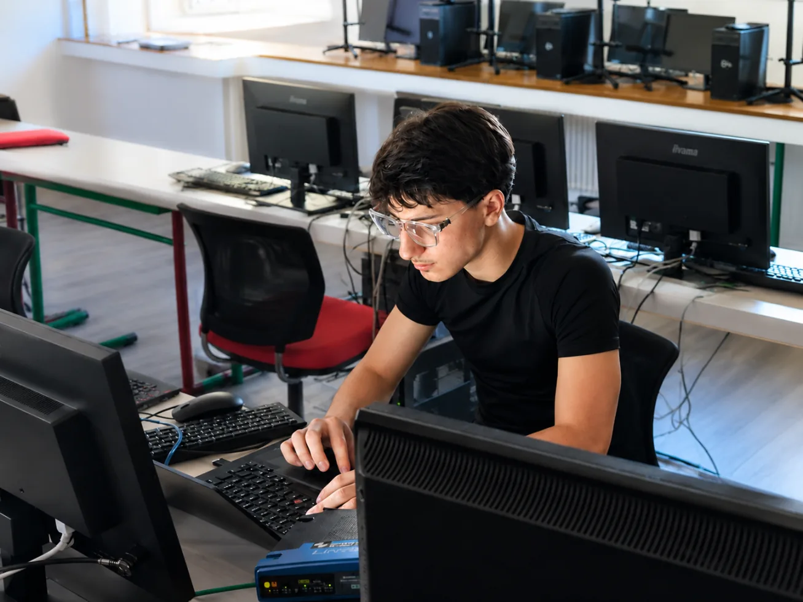

Sites web sur mesure
Sites vitrines & e-commerce conçus pour votre activité, sans template générique. Rapides, lisibles sur mobile, optimisés pour le référencement.

Sites vitrines, e-commerce et applications sur mesure — rapides, soignés et pensés pour convertir.
01 — À propos

Passionné d'informatique depuis toujours, j'aide particuliers et entreprises à transformer une idée en produit concret : une application SaaS qui tourne, un site qui convertit, une identité visuelle qui marque, ou tout simplement une machine qui refonctionne enfin comme elle devrait.
Mon approche tient en un mot : exigence. Du premier croquis à la dernière ligne de code, jusqu'à la dernière vis serrée sur un boîtier — chaque détail compte.
03 — Réalisations
01E-commerce
Des montres Seiko Mod assemblées à la main, à composer pièce par pièce en ligne.
Capture : page d'accueil de KaïroMod, une montre à bracelet jubilé et la liste des modèles à configurer.
02Site vitrine
Le site d'un coach sportif, pensé pour transformer une visite en appel découverte.
Capture : page d'accueil du site de Charles Machado, portrait du coach et bouton de réservation d'appel.
03Refonte
Plus d'un siècle d'histoire musicale, remis au goût du jour.
Capture : page d'accueil de l'Harmonie Fanfare Rudipontaine, photo de groupe des musiciens dans une rue de la ville.
04 — Méthode
On cadre le besoin réel, les objectifs et les contraintes techniques ou budgétaires.
Maquettes, direction artistique et expérience utilisateur, validées avant tout développement.
Code propre, performant et évolutif — ou montage & configuration matérielle rigoureuse.
Déploiement, formation à l'usage, puis maintenance et dépannage sur la durée.
Disponible pour de nouveaux projets
05 — Contact
Un site vitrine, une boutique en ligne, une application — ou un PC en panne. Décrivez votre projet en quelques lignes : je vous réponds sous 24 h.